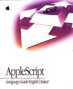

AppleScript Language Guide: English Dialect
The AppleScript Language Guide: English Dialect is the definitive description of the English dialect of the AppleScript scripting language. This book is an essential reference for anyone using AppleScript to modify existing scripts or write new ones. It also contains useful information for programmers who are working on scriptable applications or complex scripts.The book begins with an introduction to scripting and an overview of AppleScript's main features. Most of the book consists of detailed definitions of AppleScript terminology and syntax of value classes, commands, objects and references to objects, expressions, control statements, handlers, and script objects.
In addition to definitions, the book provides many sample scripts and discusses advanced topics such as writing command handlers for script applications, the scope of script variables and properties declared at different levels in a script, and inheritance and delegation among script objects.
To get the most out of this book, you should be familiar with Macintosh computers. Although not required, some previous experience with another scripting language (such as HyperTalk) is also helpful.
Availability: Click below to obtain AppleScript Language Guide: English Dialect in any of the following formats.

Printed 
Acrobat (1.1 MB).
Book Contents
- Figures and Tables
- Preface - About This Guide
- Part 1 - Introducing AppleScript
- Chapter 1 - AppleScript, Scripts, and Scriptable Applications
- Chapter 2 - Overview of AppleScript
- Part 2 - AppleScript Language Reference
- Chapter 3 - Values
- Chapter 4 - Commands
- Chapter 5 - Objects and References
- Chapter 6 - Expressions
- Chapter 7 - Control Statements
- Chapter 8 - Handlers
- Chapter 9 - Script Objects
- Appendixes
- Appendix A - The Language at a Glance
- Appendix B - Scriptable Text Editor Dictionary
- Appendix C - Error Messages
- Glossary